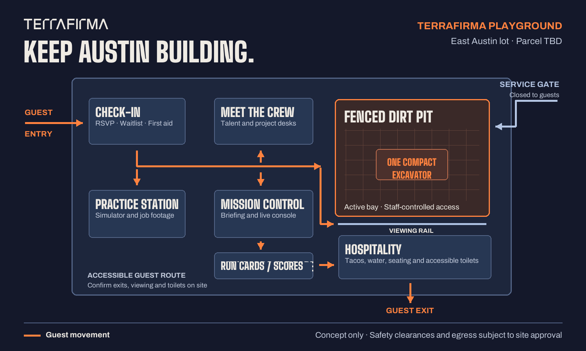

Watch a run
See the operator use the remote station while an engineer explains the screen. Compare the view at the controls with the machine working in the dirt.

TerraFirma Playground · Austin pilot
Drive the machine. Meet the crew.
Explore the planFor one afternoon in East Austin, put TerraFirma’s remote earthmoving technology in front of the people who could build it, operate it, or hire it for a project. Guests watch from the rail, take a coached turn at the controls if approved, then meet the crew behind the work.
Event concept
Turn the lookbook’s TerraFirma Playground into a one-day Austin pilot. Use one working machine, a TerraFirma operator and engineer, and a scored grading challenge guests can see from the rail.
See the operator use the remote station while an engineer explains the screen. Compare the view at the controls with the machine working in the dirt.
Reserve a coached turn at the station. Grade a small practice pad with a TerraFirma operator beside you, subject to operating approval.
Get a printed run card, meet a field or technical hiring lead, or take a real project scope to the earthworks table. Stay for tacos and conversation.

Who comes. Plan for 105 talent, 55 project/customer, and 50 community, trade, partner, and press check-ins. Prioritize operators, mechanics, field engineers, estimators, and site leads alongside robotics, controls, software and civil engineers. Invite Central Texas general contractors, developers, owners, and civil contractors with active sitework. Use four staggered arrival windows, aiming for 300 confirmations at 70% show-up. Venue and Safety set the concurrent cap, including crew, before tickets go live. Offer free admission, water, tacos, quiet seating, bilingual check-in and an accessible route to both viewing and the console.
What a run feels like. On arrival, show the host your booking or join the text waitlist. Use the signed briefing and eligibility process approved by TerraFirma. Enter at the call-up time and get coached at the station. Grade a small marked pad during a short, unhurried turn. Afterward, take a printed run card with a role, project and recap QR. Use first name or alias on an opt-in score display. Score against the target grade, with completion as a secondary measure and no speed incentive. Ops chooses the approved scoring method. The score is for the event experience. Talent routes people using role interest and recruiter qualification.
Capacity. One guest station, four 60-minute blocks, ten planned cycles per block at six minutes each. Release 36 turns across those blocks, with 24 bookable and 12 for waitlist guests. The planning assumption is 18+ for guest operation, subject to TerraFirma and insurer approval. Keep four for resets and overruns. Text at roughly 15 minutes and at call-up, and provide a host-assisted queue for guests without a phone. If the operator needs longer cycles, lock a lower capacity at rehearsal and update the registration page. Guests can also use the disconnected simulator, watch both crew demos, or join an operator-led walk-through.
Brand on site. Use the TerraFirma wordmark in the campaign files, the lookbook’s bone and ink palette, a Mars-orange accent, and restrained grid graphics. Lead with “Keep Austin Building” and the work guests can see. The run card and signage can carry the Austin Operator once TerraFirma confirms usage rights and approves the artwork.
Recommended · Private East Austin lot near I-35. Find a surfaced or stable private lot with room for a dedicated dirt work area, separate service gate, power, accessible toilets and seating, guest drop-off and an indoor shelter option. Survey prior uses, utility markings, drainage, noise, haul route, load-in access and full restoration obligations. Confirm landowner, written permission, and available day plus load-in/wrap. Evaluate Austin Center for Events requirements and permitted use before signing or promoting. No parcel is held. Austin event planning guide
Other locations. Walk Distribution Hall at 1500 E. 4th St. first. It advertises drive-in loading, indoor space, and an outdoor courtyard/lawn. Treat it as a candidate until the venue approves dirt, machine use, separation, and restoration. The downtown lot near Speakeasy stays on the shortlist once the exact parcel is identified. Check haul and pedestrian routes, and an indoor weather plan. Use an approved indoor venue for a Mission Control Pod, with Fair Market as a candidate if practical. The White Horse could host a small, separately scoped 21+ crew gathering. The plan assumes a standalone Thursday. The lookbook proposes SXSW week as a reach option. Assess event competition, freight access and premiums before choosing it. Distribution Hall · Fair Market · The White Horse · SXSW 2027 dates
Operations approval. TerraFirma Field Ops selects a real compact machine and operating team. Engineering validates the approved station, coverage and backup workflow. Safety and the venue approve the site plan and spectator separation, limit guest eligibility, and define stop and restart decisions. The event producer documents approvals, waivers, coverage, staffing and backup program. Plan a full dry run at least one week out and go/no-go test before gates. TerraFirma has already demonstrated its retrofit technology to AGC Austin. Its Buda facility includes planned outdoor testing space for a potential remote program. TerraFirma AGC demonstration · Buda EDC facility announcement
Fallbacks. If public control is declined but powered demos are cleared, a TerraFirma operator runs the real machine and guests use the disconnected simulator. If machine operation is paused or the link fails, use public-release footage plus a supervised sandbox. If site conditions are unsafe, switch to indoor backup if contracted or reschedule. Tell guests exactly which format is available. Safety controls demo holds, and the producer controls admissions and communications.
Production and staffing
Give the crew a full day to build and test the site. A 3:30 p.m. first arrival allows daytime trade and customer visits, with later blocks for engineers finishing work.
| Time | Cue / action | Accountable owner |
|---|---|---|
| 7:00–8:00 a.m. | Site handoff and vendor check-in. Close public access, photograph conditions and mark guest and service zones. | Producer + site manager |
| 8:00–10:30 a.m. | Install barriers, stage dirt, receive the machine via service gate and place the station. Verify ground, access and enclosure with the site lead. | Fleet + site crew + Safety |
| 10:30 a.m.–noon | Install power, guest facilities, assistive access, signage, viewing and AV. Set up job screens, check-in, stations and hospitality. | Producer + AV + site crew |
| Noon–1:30 p.m. | Run technical acceptance and crew-only rehearsal. Test the station, operator takeover and stop workflow. Validate offline assets and call-up. | Engineering + Field Ops + Safety |
| 1:30–2:45 p.m. | Rehearse full guest cycle and reset cadence. Walk exits, queue, accessible toilets, viewing and first aid. Check form routing and tracking. | Floor lead + Safety + registration lead |
| 2:45–3:30 p.m. | Weather and operating decision. Brief all staff, review breaks, confirm customer slots, open vendors and test gate count. | Safety + producer + BD |
| 3:30–4:45 p.m. | Gates open. First guest run block 3:45–4:45. Trade and customer welcome, console orientation and project desk. | Floor lead + operator + BD |
| 4:45–5:55 p.m. | Ten-minute narrated crew demo, then guest block 4:55–5:55. Tacos and field/technical recruiting conversations. | Emcee + operator + engineer + Talent |
| 5:55–7:10 p.m. | Repeat demo and short Q&A. Guest block 6:10–7:10. Continue prebooked project conversations and hiring handoffs. | Field Ops + Engineering + BD + Talent |
| 7:10–8:30 p.m. | Reset, then final guest block 7:20–8:20. Finish handoffs and clear guests before equipment movement. | Floor lead + Safety + registration lead |
| 8:30–10:30 p.m. | Secure machine, remove guest infrastructure, complete transport as permitted, reconcile attendance and incident log. Confirm any overnight security. | Producer + Fleet + Safety |
| Friday 7:00–10:00 a.m. | Remove dirt and remaining barriers if required, restore site, photograph condition and get signed handback. | Site crew + Fleet + venue manager |
TerraFirma posts. Brand lead/emcee (1), Field Ops lead/operator (1) plus qualified relief operator (1), Engineering consoles and AV liaison (2), Safety lead (1), Fleet/logistics (1), field and technical Talent hosts (2), customer/project hosts (2), CRM owner (1). Give operator, engineering and safety staff coverage before the public blocks begin.
Vendor posts. Producer and floor lead (2), event check-in/queue staff (3, including one bilingual lead), trained boundary and guest staff (3), first-aid staff per approved plan (1 budgeted), AV/network and site technicians (2), content crew (2), contracted haul, hospitality and strike crews. Producer finalizes shifts and relief coverage with vendors.
Planning estimates · USD
Start with one live-machine bay and test whether the demo produces hiring and project conversations worth repeating. The lookbook’s multi-day Playground informs the larger option.
90 guests · Indoor event and one approved remote link to a machine at TerraFirma’s approved test site. Existing station, no custom build.
210 guests · One compact machine and live console, a spectator rail, practice station, and staffed recruiting and project desks.
600 guests · Up to three approved machines, four stations, expanded production and additional operating shifts.
| Line item | Lean | Recommended | Larger |
|---|---|---|---|
| Venue / lot fee and site access | $2,800 | $7,500 | $19,500 |
| Dirt, grading, cleanup and restoration | $0 | $4,200 | $10,500 |
| Fleet preparation, haul or yard logistics | $1,800 | $4,900 | $12,000 |
| Console support, displays and production AV | $5,800 | $8,500 | $16,000 |
| Fencing, barriers and viewing rail | $750 | $2,900 | $6,400 |
| Power, lighting and network backup | $1,500 | $3,300 | $6,800 |
| Tents, furniture, toilets and accessibility | $1,200 | $2,700 | $6,500 |
| Food, water and hospitality staffing | $2,000 | $4,700 | $11,800 |
| Permits, insurance and waivers | $1,400 | $3,300 | $6,000 |
| Security and medical coverage | $1,850 | $3,600 | $8,700 |
| Production labor and guest staffing | $2,800 | $5,700 | $13,700 |
| Queue software, signs, run cards and print | $1,450 | $2,100 | $4,300 |
| Photography, video and edit | $950 | $2,050 | $5,300 |
| Paid local promotion | $500 | $1,500 | $3,500 |
| Subtotal | $24,800 | $56,950 | $131,000 |
| Contingency · 15%, rounded up | $3,720 | $8,543 | $19,650 |
| Total | $28,520 | $65,493 | $150,650 |
Recommended pricing assumes an off-peak private lot, one round-trip haul, one day of public operations, next-morning site restoration and TerraFirma-provided machine, control hardware, footage and internal staff. The hospitality line targets roughly $22 per checked-in guest including service. Ask for tax- and service-inclusive bids. Partner distribution is contributed. Paid media here covers local digital promotion. Quote a weather option alongside the venue and reapprove the cap if a guaranteed backup hold raises the total.
The lookbook carries ~$38K for a fitted booth Pod, ~$105K–$145K for a multi-day Playground and a separate ~$37K container build. The lean estimate assumes an existing station and a simple local indoor venue. The larger estimate above includes the 15% reserve and uses rented infrastructure and existing control hardware. A custom ~$37K container would bring that estimate to about $193,200 with the same reserve rate. All three are planning allowances.
Promotion, capture and follow-up
Track who shows up, who takes a turn, and what they do next. Count each attendee once, even when they’ve opted into more than one audience path.
Unique check-ins. Target 25,000 local impressions and 250 unique recap viewers by day 14.
Qualified opt-in talent leads, aiming for 20 field and 20 technical. Target 16 booked screens by day 14.
Qualified project leads. Target 8 booked discovery calls by day 14 and 3 scoped opportunities by day 30.
T–4 weeks · Brand. Open registration with “Keep Austin Building” and a real jobsite clip featuring a field operator and an engineer. Share via TerraFirma, founder and crew posts. Give prospective partners copy and a trackable route. Pitch local construction and tech media a preview and an operator interview. Use $1,500 for a local promotion test, split across an equipment clip and role-specific calls to action.
Field and technical recruiting · Talent. Ask crew referrals and selected trade programs for introductions, including ACC’s Infrastructure Academy. Use direct outreach and engineering communities, including Texas Robotics, for controls, civil, robotics and software candidates. Confirm current job families and expected work locations before publishing. Post a Spanish RSVP summary and coordinate bilingual check-in. ACC Infrastructure Academy · Texas Robotics Graduate Students
Customer opportunities · BD. Invite 55 named GC, developer, owner and civil accounts and ask AGC Austin about sharing. Lead with an approved Texas project example and offer twelve 15-minute project conversations across two hosts. Talk scope, schedule, site conditions and decision process. Route promising projects to an estimator or a company-approved yard or site visit.
T–2 weeks through doors · Brand + Talent + BD. Post the demo in the mode confirmed by Ops. At T–7 days, target 225 of 300 confirmations. Check audience mix and follow up directly on any shortfall. Send arrival, access, weather, and demo information at T–48 hours and day-of. Use distinct UTM links for partner, paid, employee, media and customer invites.
| Audience | Capture and qualification | Follow-up and measurement |
|---|---|---|
| Brand | Unique check-in ID, source link and optional future updates. Capture approved footage of the job, console and crew. | Brand publishes the recap by day 2, reports local-platform impressions, unique recap viewers, earned mentions and check-ins by day 14. Log 36 target turns, completed runs, live guest versus operator-only mode, and median call-up wait. Target median under five minutes after the call-up text. |
| Talent | Role family, experience or work link if volunteered, work-location interest and consent. Qualified means a recruiter confirms fit for a priority role and interest in a conversation. | Talent sends relevant openings by day 1, routes records by day 3, tracks applications within seven days and booked screens by day 14. Review interviews and hires at days 30, 60 and 90. |
| Customers | Company, role, project region, sitework scope and timing. Qualified means a local earthworks fit, a named stakeholder and an actionable next step. | BD sends a personal note by day 1 with the agreed action. Track booked discovery calls at day 14, scoped opportunities with owners and next steps at day 30, and bids and pipeline at days 60 and 90. |
Use one RSVP ID for check-in and the three intent paths. Request a phone number for queue SMS only from guests who choose that service. Keep waivers and access requests in their approved workflows. Use the run card QR to connect to role interest, project intake or recap. Route opted-in leads to the ATS or CRM with the Austin event source, de-duplicate by email/account, and assign a next action. Demo participation and general marketing consent are separate.
Day-30 decision · COO and Brand. Compare actual spend, live demo delivery, recruiting screens and customer pipeline with the targets. Use the completed runs and wait-time data to size the next site. Start with the lowest-cost format that can deliver the audience and operating goals again.
COO review
Authorize quote requests up to a $66,000 planning cap and two East Austin site walks. Confirm who can sign off on guest machine control, which machine and team are available, and which roles and project types the event should prioritize.